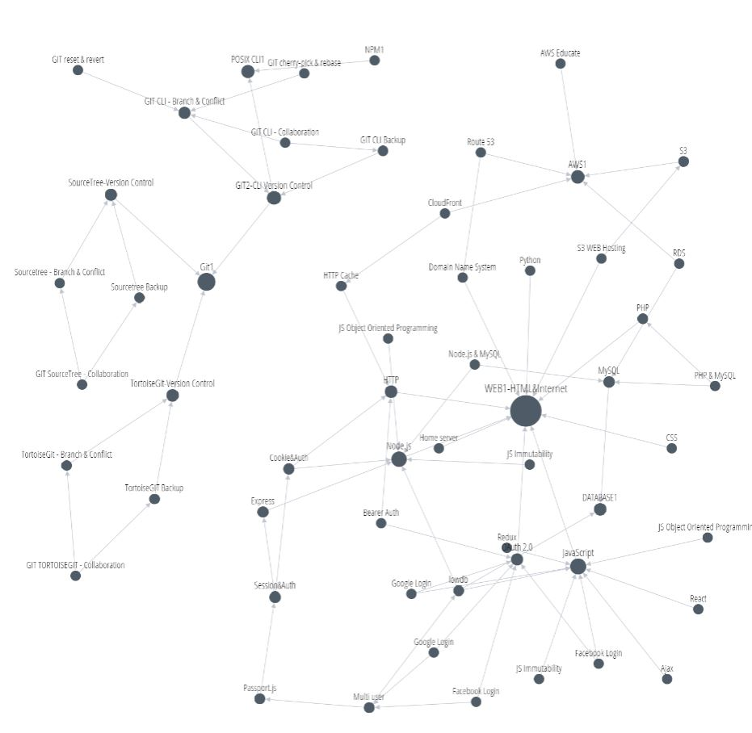

사실 처음에 코딩을 시작하려 했을 때 많은 걱정이 있었다. 코딩이 어렵고 복잡해 보이기도 했지만, 그것이 나에게 얼마나 큰 도움을 줄지 몰랐기 때문이다. 처음에는 그저 멋있어 보여서, 혹은 그냥 재미로 시작한 코딩 배우기였지만, 주제 탐구를 진행하면서 이 ‘코드’의 힘이 얼마나 위대한지 작은 코드가 어떤 변화를 만들어 낼 수 있는지를 알고 코딩에 빠져들게 되었다. 그래서 앞으로 이 코딩에 대해 더 배워보고 싶은 마음이 생겼다.
내가 이번에 배운 HTML은 코딩에 기본이 되는 컴퓨터 언어이다. 그래서 더 복잡한 웹사이트를 만들기 위해서는 다른 컴퓨터 언어 또는 기술을 배워야 한다. 그래서 나는 아래 그래프의 WEB1-HTML&Internet에 연결된 다른 기술 중 하나를 배워보려 한다.
